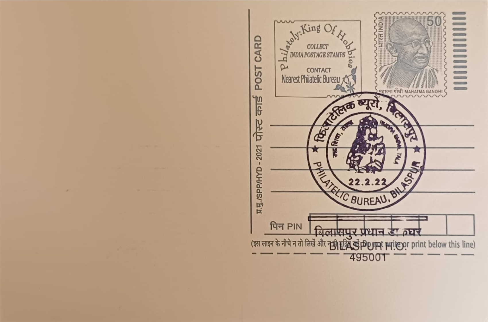

Rudra Shiv Sculpture
रुद्र शिव मूर्ति


The Rudra Shiva sculpture most closely associated with the Bilaspur region is the celebrated stone image housed within the Devrani-Jethani temple complex at Tala, a village roughly forty kilometres from Bilaspur town. Local tradition and inscriptional evidence link the twin temples to the Sharabhapuriya dynasty that ruled the upper Mahanadi valley in the fifth and sixth centuries CE, placing the sculpture's origin well before the later Kalachuri period with which Chhattisgarh's temple architecture is more commonly associated. The name Rudra invokes Shiva's fierce Vedic aspect, the howling, destructive deity later absorbed into Puranic and Tantric conceptions of cosmic dissolution, and the Tala image was carved specifically to embody that terrifying, world-devouring form rather than the benign ascetic Shiva more familiar from later iconography.
The sculpture holds unusual significance within Indian art history because of its singular iconographic programme: rather than depicting Shiva in conventional anthropomorphic form, the sculptor rendered the deity's body through an assemblage of composite animal and human figures, a technique without a clear parallel elsewhere in the subcontinent. Crocodiles, lizards, fish, crabs, peacocks, tortoises and a serpent are worked together with seven human faces and two lion heads to form the contours of Shiva's torso and limbs, a treatment some scholars read as a visual expression of Tantric Shaiva cosmology in which the god's body contains and generates all living creation. Because the image does not correspond to any described form in the surviving Puranic textual canon, it is frequently cited in regional art-historical literature as an isolated artistic experiment produced by craftsmen working in the ateliers of the Chhattisgarh plain during the Sharabhapuriya period.
The statue itself is substantial in scale, standing approximately 2.54 metres in height and about one metre in width, carved from sandstone in a style consistent with the sophisticated temple workshops that flourished across the upper Mahanadi valley in Chhattisgarh's early medieval centuries. It remained buried and unknown to modern scholarship for generations, concealed beneath the floor of the Devrani temple itself, one of the paired shrines that together form the Devrani-Jethani complex and that are themselves considered among the earliest surviving brick temple structures in central India. The broader temple-building culture of the Bilaspur-Ratanpur tract, later patronised extensively by the Kalachuris of Ratanpur between the tenth and twelfth centuries, continued to produce Shaiva imagery and temple fragments in a related artistic idiom, several examples of which survive in fragmentary form around Ratanpur today.
The sculpture's most distinguishing feature, and the event that brought it to wider notice, was its excavation in 1988, when archaeologists working at the Tala site uncovered the image from beneath the Devrani temple and subsequently placed it in situ for public viewing rather than removing it to a museum setting. Its composite construction from animal and human forms led several scholars to describe it as a uniquely tantric rendering of Shiva unmatched by any other known sculpture in India, a claim that has made the Tala image a recurring reference point in studies of Shaiva iconography from central India and a subject of continued scholarly debate over its precise textual or ritual sources.
Fragments recovered during the same excavations at Tala, along with other sculptural material from the wider Bilaspur-Ratanpur region, were subsequently studied and a portion deposited in the Bilaspur museum, while related Kalachuri-period Shaiva images from the Ratanpur area have been documented in regional collections including the Mahant Ghasidas Memorial Museum in Raipur. The Devrani-Jethani complex at Tala, together with the Rudra Shiva image it sheltered for centuries, is now maintained as a protected archaeological site open to visitors and researchers, who come to examine an image that art historians still treat as an unresolved puzzle of early medieval Chhattisgarhi sculpture rather than a settled chapter of Shaiva art.
| Date of Introduction | October 9, 1993 |
|---|---|
| Address | Senior Postmaster, |
| Bilaspur HO, | |
| Bilaspur (dt.), Chhattisgarh - 495001. |